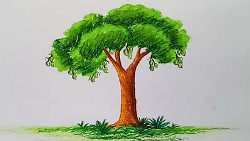
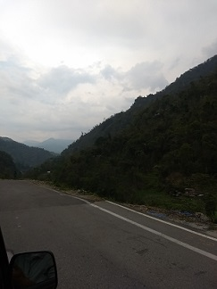
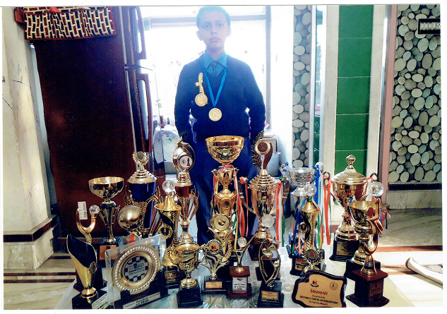
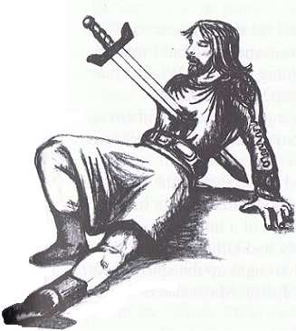
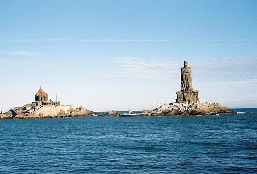
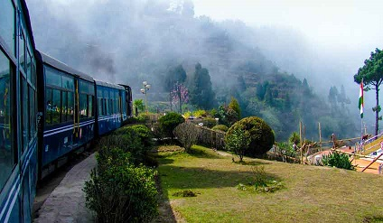

A GOLDEN FISH
I am a goldfish
I have five fins.
Swimming all around
Without making a sound.
My colour is orange and yellow
And I always glow.
My tail is twin
I like to swim.
- ARNAB KUNDU,2B
FUN THOUGHTS
During a cold winter day a wife messaged to her husband, “ Window's frozen.”
Husband replied,”Pour some warm water on it.”
After a while husband received a message again, “No way, the computer is completely spoilt now!”
_____________________________________________________________
In which bank does Dracula like to save money?
In a blood bank!
_____________________________________________________________
What type of waves are there in small beaches?
Microwaves!
_____________________________________________________________
-Aryan Shaw,Class: 4B
FRIENDSHIP
Some like wooden ship,
Some like Silver ship,
Some like Gold ship,
But I only like your friendship.
- SHREYAS ROY,3B
A LITTLE PROMISE
Since my childhood, I had seen my mother distributing lots of chocolate and cake among the street children every year on my birthday. After that, we would have a birthday party at home with my friends.
Now I am a big boy. I can understand why my parents arranged the special birthday for my street friends. I asked my father and he explained to me that there were a lot of children who didn't have food, clothes, shelter and education. Maybe this is very little contribution on our part but we can make it bigger if everyone can do something for them. Now, this is my little promise that I will extend my helping hand towards them when I will be big like my father.
-SAMRIDDHA BARAL, 4A
God's Gifted Nature
There are thousands of creatures
We have to survive with them
Whether they are wild or tame.
The large and small valleys are the best
The world has got many forests.
Amazon is the largest among them
Mount Everest is the largest peak's home
The Earth is covered with oceans and seas
The real beauty of the nature come from the trees
There are thousands of animals with long tails
We all are independent whether its male or female!
In the sky we see the birds,
Still now, there are houses made with mud!
Birds have one pair of wings
God has sent us as human beings
We should thank God for giving this beautiful nature
We should take care of all the creatures.
-Debanshu Ghosh, 3B
AMAZING FACTS
1.VANILLA: 80 % of vanilla flavored food is made artificially ,because natural
vanilla beans are very expensive.
2.KANGAROO: Kangaroo cannot walk backwards.
3.POTATO: It is a staple food in many countries and is the most cultivated vegetable across the globe.
4.VENUS: Venus is the only in the solar system that rotates clockwise,where as all the planets rotate anti-clockwise.
5.RABBITS and PARROTS: Rabbits and Parrots can see what is behind them without turning their head.
-Rannvijay Jaiswal, CLASS:2B
DAYS TEACH ME
Days teach me
To dream so high
Never give up and always try
Never let go or say goodbye
Days teach me
To always care for a friend
Always be true and never pretend
Always love with no end
And the broken hearts try to mend
Days teach me
Not to be shy
If I have done something wrong
But to admit it and be proud that I have learned
A lesson that will help me to be strong
- Arhan Nath, CLASS:3A, ROLL:32
JOKES
An old man had 8 strands of hair on his head
He went to a shop.
In anger the barber asked-
“Shall I cut or count?”
The old man smiled and said-
“Colour it.”
Life is to enjoy with whatever you have.
-James Sahil Sarkar,CLASS:4B, ROLL:41
SAVE GIRL CHILD
A daughter is one of the most
Beautiful gifts this world has to give.
There is no ‘HE’ without ‘SHE’.
Let us protect the child.
-ANURANN GUHA,1A
Increase your knowledge
•Name of the veena carried by goddess saraswati : bipanchika.
•Which god has six heads : kartikeya.
•Name of the conch of sri Krishna : panchajannya.
•Sister of lord rama : shanta.
•The abode of lord yama : sangjamani.
•The abode of lord kubera : alokapuri.
•Name of the snake on which lord Vishnu rest : ananta nag.
•Incarnation of lord Vishnu with horse head : hayagriba.
•The brother of goddess parvati : mainak.
•The son of lord indra : jayanta.
•The club (gada) of lord Vishnu : kaumadaki.
•Name of the lotus of goddess durga : indivar.
•Wife of lord agni : swaha.
•The horse which came out from samudramanthan : uchchaisraba.
-Archisman
MY EXAM FEAR
My exam is near;
I am full of fear,
I am studying late at night-
For my answers to be right.
I am frightened as never;
As I know I am not very clever:
I cannot sleep a wink
All I am doing is think and think;
If I do not pass!!!
I do not want to repeat the same class!
For if I would fail!!!!!
For my father would trash me to bale. Yew!!!
The following day was very creepy!
As I am very sleepy!
At the exam table I tried to be stable;
I am shocked to see the time!!!
And I haven't written a single line!!
For I had slept all through,
That silly exam!!!!!!
- Anik Dasgupta, CLASS:6A, ROLL:17
SOME THOUGHTS FOR LIFE
•Today does not depend on the first face you saw this morning but it depends on the deeds of yesterday.
•They only rise, who have the guts to fall.
•The most important weapon needed in a war is a partner.
•Improvement in life is the competition of your today and your tomorrow.
•Every broken thing can be re-joined.
•There is always a better than the best.
•There is no such lock present which does not have a key.
•Sometimes thinking simple is the solution for complex problems.
-SOUJATYA SEAL,Class: 9A
When it's a mistake
Mistake Mistake Mistake...
If a barber makes a mistake
It's a New Style,
If a politician makes a mistake
It's a New Law,
If a scientist makes a mistake
It's a New Invention
If a tailor makes a mistake
It's a New Fashion,
If a teacher makes a mistake
It's a New Theory,
If a student makes a mistake
It's a “Mistake”...
-Md. Idban Mallick, Class:4A, Roll:31
MYSTERY OF THE FAMOUS GHOST TRAIN
Five years ago one night in 2013 in London a family had to cross a very old and haunted station that had been abandoned for many years. When the family came near the railway line they saw a huge mysterious train, frightening in its appearance and heard the whistle of the train. The train was waiting to take the passengers. The train was black in colour.There was no driver and the train was running automatically and the passengers of the train looked scary.They could kill any people(human),they were zombies, grim reapers(death), witches and wizards, nightmare goblins. The zombies were going to zombie land; grim reapers were going to the underworld.
Witches and wizards were going to their magical worlds and so on.
But the famous ghost train did not appear in the day but at midnight. Humans could not board the train.-SANKHADIP MONDAL,Class: 4
HOLLOWS
There is a light in every Hollow.
Every time we can't see,
Every time we awake.
There's a light, there's a light!
There's a light in every Hollow.
Birds get through the dark,
Every time you set fire in the dark,
And light the shadows behind you.
There is a light in every Hollow.
Every time you can't see,
Every time you awake.
-ANIRUDDHA DAS,Class: 9A
RIDDLES
1.I am full of holes; I can hold water. What am I?
SPONGE
2.What are two things people never eat before breakfast?
LUNCH AND DINNER
3.What has two hands and a face, but no arms and legs?
CLOCK
4.What has 4 legs and only 1 foot?
BED
5.What gets wet when drying?
TOWEL
6.What is it the more you take away the larger it becomes?
HOLE
7.What can't be used until it's broken?
EGG
8.What has many keys but can't open any doors?
PIANO
-Md. Idban Mallick, Class: 4A
Swami Vivekananda
Parliament of Religion at Chicago

On September 11, 1893, the parliament met at a big hall in Chicago. Representatives of different religions were seated and Swamiji was among them. Swamiji took some time to address such a large and distinguished assembly. At last he silently prayed to Devi Saraswati and rose. Swamiji started his speech with addressing the audience as “the sisters and brothers of America”. The audience greeted him with a thunderous ovation. Swamiji spoke from his heart and did not care to compose his speech before hand. Every heart was touched by the deep love that emanated from his speech. Swami Vivekananda won the United States with this singular address. Everyone was made to appreciate that a truly religious man must love all.
-SAPTARSHI SARKAR,Class: 4A
RIDDLES
Q: What gets wetter the more it dries? Ans: A towel. Q: When you look for something, why is it always in the last place you look? Ans: Because when you find it, you stop looking! Q: A cowboy rode into town on Friday. He stayed in town for three days and rode out on Friday. How was that possible? Ans: Friday was the name of his horse. This next one needs to be told out loud... Q: One night, a king and a queen went into a castle. There was nobody in the castle, and no one came out of the castle. In the morning, three people came out of the castle. Who were they? Ans: The knight (night), the king, and the queen! Q: Railroad crossing, watch out of cars. Can you spell that without any “r's”? Ans: T-H-A-T Q: What has a face and two hands, but no arms or legs? Ans: A clock.Q: What has to be broken before you can use it? Ans: An egg. Q: Lives in winter, dies in summer, and grows with its roots upward.What is it? Ans: An icicle. Q: It starts out tall, but the longer it stands, the shorter it grows.What is it? Ans: A candle. Q: What belongs to you but is used more by others? Ans: Your name. Q: What goes up and never comes down? Ans: Your age. Q: How can a man go 8 days without sleep? Ans: He only sleeps at night. Q: I'm full of keys but I can't open any door. What am I? Ans: A piano. Q: What has a thumb and four fingers but is not alive? Ans: A glove. Q: A man found an old coin and declared that the date on it was 150 B.C. This could not be true. Why? Ans: Because B.C. is counting backwards from the birth of Christ. If Christ hadn't been born yet, there were no dates in B.C. yet! Q: Which is heavier, a pound of bricks or a pound of feathers? Ans: The same ‑ a pound is a pound! Q: I'm light as a feather, yet the strongest man can't hold me for more than 5 minutes. What am I? Ans: Breath. Q: Can you name three consecutive days without using the words Wednesday, Friday, and Sunday? Ans: Yesterday, today, and tomorrow. Q: Timmy's mother had three children. The first was named April, the next was named May. What was the name of the third child? Ans: Timmy of course! Q: What kind of coat can only be put on when wet? Ans: A coat of paint. Q: What occurs once in a minute, twice in a moment, and never in one thousand years? Ans: The letter M. Q: What has three feet but cannot walk? Ans: A yardstick. Q: What runs, but never walks, often murmurs ‑ never talks, has a bed but never sleeps, has a mouth but never eats? Ans: A river. Q: If you are running in a race and you pass the person in second place, what place are you in? Ans: Second place. Q: What gets sharper the more you use it? Ans: Your brain. Q: If I have it, I don't share it. If I share it, I don't have it. What is it? Ans: A secret. Q: What can you catch but not throw? Ans: A cold. Q: How many months have 28 days? Ans: All 12 months! Q: They come out at night without being called, and are lost in the day without being stolen. What are they? Ans: Stars. Q: What is full of holes but can still hold water? Ans: A sponge. Q: Two in front, two in behind, and one in the middle. How many are there? Ans: Three.
-Henry Mardi,Class: 6a,Roll no: 25
PRIDE INVITED TROUBLE
There was a banyan tree and a mango tree on the roadside. The Mango tree bore sweet, juicy mangoes. Many people would rest under the shady tree and enjoy its sweet fruits too. No one paid much attention to the old banyan tree. The mango tree had grown proud of its appearance. One day it said to the banyan tree,“ I am very important. Everyone likes my tasty fruits. No one asks for you.”
“Don't feel so proud,” said the banyan tree. “Everyone has its own place.” Next day some boys picked all the mangoes of the mango tree. They broke many branches and leaves too. After that the mango tree looks ugly. Then the banyan tree said,“ Pride always invites trouble for you, while I am standing here safe.”
-Adrish Das, Class: 4B
Pokemon
Pokemon is my favourite cartoon;
I watch it every afternoon.
Many Pokemons are tall,
But they can easily fit in a Pokeball.
Pikachu is a very cute Pokemon, and also always in a good mood;
And it likes to eat Pokefood,
Which are always very good.
It is always ready to lend Ash a hand.
They together travel through hills and mountains, rivers and plains and sometimes deserts of sand.
Snorlax is an arrant sleepy head
Who always tries to lie in bed.
Starmi doesn't have a face;
But have a beautiful structure to gaze.
Ash may have lost the Jhoto league;
But his dream is very big
To become the best Pokemon trainer in the world
-ANIK DASGUPTA,Class: 6A, Roll no:17
THE BUSY COBBLER
There is a cobbler who lives in my town. As he is the only cobbler, everyone goes to him to get their footwear repaired. He is so busy that he doesn't have the time to repair his own boots. This wasn't a problem at first, but over time, his boots began to wear off and fall apart.While he worked feverishly on everyone else's shoes, his feet got blisters and he started to limp. His customers started to worry about him, but he reassured them that everything was alright.However, after a few days, the cobbler's feet were so injured that he could hardly work and nobody's footwear got repaired.As a result, some of the people of my town started to limp in pain; all because the cobbler never took time to repair his own boots. One day, I took pity on him and went to him and said," If you are in a responsible position and are one of the important links in the group's survival chain, and if you don't look after yourself, after a while you'll be no good to anyone else either." After saying this I took him to the town doctor and used my pocket-money to pay his treatment charges. Soon, he got cured and became hale and hearty and he once again started his work. But this time there was a slight change as he repaired other's shoes he also took out time to repair his own pair of boots.After hearing my good deed my parents were very proud of me; my father even told me, "Keep it Up!" This was the sweetest thing I ever heard, from my father. Moral: If you don't take care of yourself, no one else will.
-ANIK DASGUPTA
A TRIP TO BHUTAN
Last year we went to Bhutan in the month of May. We started our journey from Sealdah station. On Day 2 we went to Paro. There we stayed for two days . The scenery there was wonderful. High hills, clean road, no traffic. Nature was hundred percent green. On Day 3 we went to Thimpu, the capital of Bhutan. There I saw the court and the King's House but I was unable to meet the King. The Court was beside the King's House. I saw the Penokha Jung(Temple).In the temple I saw three amazing things. I saw a clean flowing river, a bridge about 23 feet above the river and the most amazing species of Lizards in the temple premises. I also saw a little Bluebell flower. On Day 4 we went to another jung. There we saw a very big Buddha Statue in the temple, the place was also big and quiet. The temple was under construction. On Day 5 we went to a museum ,where we saw many things related to Bhutan's history. On Day 6 we bought a Buddha's bell which was used during meditation. The same day we got on the train back home. On the way there was a place where the train was passing through the clouds. For me Trip to Bhutan was the most enchanting one as I enjoyed a lot and was able to know many interesting things.
-Trishanjit Dhar,CLASS:2A
CHILDHOOD
Childhood means simplicity.The most ironical thing is one spends the whole childhood wishing he was older and when he reaches adulthood he wants his childhood back. Childhood is short and today it seems that it is becoming shorter by the day. In urban areas in big metropolitan cities children do not have the scope to play in the fields, enjoy the thrill of rolling tyres or attach a tyre to a rope, make a swing and fly in the air. When we read books of Enid Blyton, Rabindranath Tagore, Mark Twain,we see a thrilling picture of childhood days without a worry in the world. In fact we make our best friends in childhood. It is true we argue for one or two marks, sulk but then we also love and appreciate our friends. You just become friends, without even knowing anything about the friends' family or their background, those things don't matter. Even today one of the most beautiful reasons we go to school is because of our friends. But then with the passage of time this childhood is becoming abridged. First and foremost we live in small flats and hardly have access to grounds, Nature,and basically the outdoors. After school we go for tuition and by the time we reach home we are dog tired. We watch T.V., eat dinner finish our homework and another day begins in the same pattern. So somewhere due to our educational system, parental expectation and pressure of living in an overpopulated country we have lost our childhood. For city children it is no more playing in the lanes and by-lanes of the neighborhood. Parents take the children to malls where they play games, watch movies, eat & shop. And then the world complains that children are becoming consumerist. For a city child probably the most beautiful time is when his final exam ends and is probably taken for a short trip during the session break. To some extent children have a better life who live away from the cities. They have no access to malls and there are huge fields so there is a scope to play, to get and make life-long friends. Of course this is not romanticizing rural existence where probably the child has to face a lot of hardships. Probably childhood will come when there will be more opportunities in our country, children will not have to worry about livelihood and parents would not be scared about the child's future.
-Aritra Bose, CLASS : 9B
Dream On...
My favourite game is chess.
It is a game of intelligence and my passion too.
I started learning chess at the age of five.
I played several matches in the district, state and finally national level.
My goal is to become a grand master(GM).
My current FIDE Rating is 1310 in rapid and 1288 in standard.
I got 17th position in National Chess Championship held in November 2017 at Gurgaon, Haryana.
My name was published for the first time in the newspaper.
Apart from study, I spend most of the time in chess.
It is my dream to represent my country in World Chess Championship one day.
-Soureen Bhattacharya, Class 3A, Roll - 6
THE TRAGEDY OF MACBETH
William Shakespeare is the greatest English poet, writer and also a famous dramatist. He is well-known all over the World. He is often called England's national poet. Macbeth is one of the most popular tragic dramas still played on the stage and appreciated by everyone.
Once upon a time, in Scotland, two horsemen, Macbeth and Banquo were returning from a victorious battle. On their way, three scary-looking witches appeared. They were cooking in a cauldron.
The first witch saluted Macbeth and called him 'the thane of Glamis', as he was. The second witch also saluted him and called him 'the thane of Cawdor', though he was not. The third witch also screeched at Macbeth that he would be king, though the present king Duncan was still alive, with his children. Then the witches said to Banquo 'lesser than Macbeth, yet greater, you shall give birth to kings but never be one'. Then suddenly they disappeared confusing both Macbeth and Banquo.
Soon after on reaching their castles, the messengers got good news for Macbeth that the king had granted him the title 'thane of Cawdor' which was the second prophecy of the witches. On hearing this Macbeth got greedy. He wanted to become king! The messengers also told him that the king would spend that night in Macbeth's castle. On hearing this he sent a message to his wife.
On reaching his castle, he talked to his wife about all that had happened that day. He was very excited that he had become the 'thane of Cawdor' and also about his future of being king. Lady Macbeth instigated him to murder King Duncan. At night when Duncan was asleep, Macbeth stabbed Duncan. In the morning there was horror everywhere. Malcolm and Donalbain, Duncan's sons left Scotland fearing for their lives.
After then, the nobles declared Macbeth as the new king! The third prophecy had finally come true. Then Macbeth murdered Banquo too. After then he held a feast inviting all the nobles where Banquo's ghost appeared smeared with blood. Macbeth was terribly scared and wanted to meet the witches again that night. He met the witches cooking in their cauldron and cautioning him to beware of Macduff, the thane of Fife. Macbeth sent his soldiers to kill Macduff's wife and children.
Meanwhile, Lady Macbeth started having nightmares and she finally killed herself. Macduff formed an army with Malcolm to defeat Macbeth. He ordered his soldiers to cut the branches of Birnam wood and carry it to Macbeth's castle to confuse him with the number of soldiers. When Macbeth saw the forest moving, he prepared himself for battle where he came face to face with Macduff and fought terribly. But at last, Macduff stabbed Macbeth with his sword and killed him. Then Malcolm ascended the throne and started ruling the kingdom.
-Tathagata Swarnakar, Class : 6B , Roll : 47
IF ONLY WE COULD DIE
We never imagined that the world would end this way. No bombs were dropped. No undead rose up. No grand environmental disaster swept us all away. Time passed for eons and with each and every generation we thought that we would finally experience the end. What came was infinitely worse than we ever could have envisioned.
When a group of prominent doctors finally found the secret to immortality, people began to let go of their fears of death and destruction and focused on living. As long as one solitary cell of their body remained on this earth they could and would be regenerated. Death had been conquered, and all it took was one small injection.
The world became less about change and advancement and more about stagnation. The thought of change inherently went against the idea that life would always be this “perfect” forever. The only facets of our society that were allowed to change were those that allowed us to stay the same. Meaning, that we new immortals still had one flaw. We still aged.
Regeneration could not oppose the wheels of time. We were not able to prevent cellular aging. Telomeres continually shortened as our DNA itself slowly deteriorated. The body would mature, deaf to the fact that it would never die. Our brains however, maintained most of their stability. Neuronal cells do not undergo the damning cellular division that physically aged us. But time certainly began to impart its influence on our collective psyches.
The frail nature of the human mind makes it susceptible to lunacy over extended periods of time. Many people lost their minds before immortality was ever achieved; in our hubris, we had never realized the inevitability of such a derangement if our minds were to be trapped upon this earth forever.
Looking in the mirror was what sent many people into the psychological abyss. They would gaze into it, and see a creature that did not even faintly resemble a human any longer. All they would see was a chaffed, sagging, and blemished mass of flesh staring back at them through greyed, dry eyes. A warped and twisted mass of bruised and inelastic skin that settled upon old and visibly jagged overused bones. Upon witnessing the monster they had become, many people gave up all grasps they had retained on reality.
People began to try to kill themselves. Finding extreme measures for bodily destruction was the only chance. A popular idea was volcanoes. The fools would throw themselves inside, burning and suffering excruciating pain. But it would never work. They would continuously regenerate within the molten rock, flesh agonizingly generating at a rate barely faster than the magma would eat it away.
This is the end of the world. No death, no carnage, nor destruction, but a lack thereof. This is a never-ending hell, a deathless purgatorial existence of neurosis and insanity, with no foreseeable escape in sight. We would all give our lives, if only we could finally die.
-Himaghna Maitra, Class : 12
LAUGH OUT LOUD
In class,
Teacher: Zulu,why are you down today?
Zulu: Because mum is in hospital and dad is at the police station...
Teacher: Ooh sorry dear, do you want to go home?
Zulu: Yes…teacher.
Zulu goes home and teacher asks the remaining pupils.
Teacher: Why is Zulu's father at the police station and the mother in hospital?
Pupils: Because his father is a policeman and the mother is a nurse
Teacher: Stupid child! Call him back!!!
-Tathagata Swarnakar, Class : 6B , Roll : 47
SAVE THE ENVIRONMENT
Environment is the thing god has given to us and where we all live. We all play, grow and live in that environment. It consists of the earth, water, air, plants and animals. It is our original house for living. Before creating us and the animals god created air, water, soil, and plants which are essential for us to live and survive on earth. In the primitive age, human beings used to fulfil their basic needs like foods, cloth, and shelter by consuming the plants and animals in raw form.
Our environment consists of all living and non-living things. It can be classified as natural environment and built environment. Natural environment is something that god has given to us in the form of nature and built environment is made by the humans.
The natural environment is being polluted due to unnatural factors. Humans cause more pollution than the environmental causes when the volcano erupts. It is the reckless and the caustic human nature that is primarily responsible for the environmental pollution.
Environmental pollution is the biggest menace to the human race on this planet today. It means adding impurity to the environment. The environment consists of earth, water, air, plants and animals. If we pollute them, then the existence of man and nature will be hampered.
It is true that trees are being cut down rapidly. Our earth is becoming warmer. If pollution continues, the day is not far when our earth will become like a boiling pan and a desert. Or it will be covered with sea water causing destruction of mankind.
Pure air and water is required for us, if we want to stay fit and healthy. On the other hand impure air and water weakens our immunity system and may cause death.
So, we must keep our environment clean as we want to stay fit.
Thus, we must use biodegradable things and not use plastic bags. And we must not misuse the things god has given to us which we collectively call as nature. And we must not forget that it is our duty to preserve and save every single thing. Because every single thing which we can save we must save because when we save nature we "save a life of someone in the future".
-Piyush Rathi, Class : 6A, Roll : 36
Surprise of B House
One night, it was very dark. It was raining heavily with thunder and lightning at regular intervals. A man who is my neighbor Mr Leo Gonzales was returning home down a lonely street. He had an umbrella. But when he was crossing a private lane it started raining heavily and his umbrella could not prevent it. Suddenly he noticed a house in the lightning. It was dark, mouldy and burned. He ran there to take shelter.
He felt that the street lights were becoming dim. He saw the name " B HOUSE, PRIVATE LANE" written on the plate. He had heard about the building from his childhood. The house was haunted but he did not believe it. Suddenly he heard a strange noise. It was coming from the house. He thought that it could be a cat in the house.
Suddenly he saw the door of the house opening. Except for the darkness nothing could be seen inside the house. He made up his mind and entered the house to stay for the night. As he entered the room and went to switch on the light he saw the door close automatically. He was scared. Suddenly he saw a strange thing; a figure in white cloth was in front of him. The colour of the figure was deep black. He under stood that the black colour of the eyes , skin and head were clotted blood. He realised that the figure was none other than his uncle's.
His uncle Mr Anthony Bombiro was murdered by some unknown person before his birth. He became very scared and tried to leave the place as soon as possible. But unfortunately he was stopped by a blood stained hand. He felt cold like a snake. He saw that he had become a fish in the water and his uncle was saying with anger why he could not escape the murderer. He closed his eyes in terror.
Suddenly he heard a loud voice near his ear saying, " wake up!! It is nearly seven." He opened his eyes slowly and realised he was dreaming
When he was crossing the road that day, he saw the same building again and the words on the plate were
" B HOUSE, Private Road"
- Pratik Bhadra,Class : 6A, Roll : 6.
RIDDLE ME THIS
Q: I'm tall when I'm young and I'm short when I'm old. What am I?
ANS: A candle.
Q: what starts with the letter "t", is filled with "t" and ends with "t"?
ANS: A teapot.
JOKES
Mother to Jonny: "How was your exam, were the questions difficult?"
Jonny: "No mom, all the questions were simple, it were the answers which gave me all the trouble."
- ADRISH DAWN,CLASS : 4A,ROLL : 14
What is winning attitude?
3 ant saw an elephant coming.
ANT 1: We will kill him.
ANT 2: We will break his legs.
ANT 3: Forgive him guys he is alone and we are three.
WORDS THAT WE COMMONLY PROUNOUNCE WRONG
1. ASTHMA
Wrong- as-tha-maa
Right- azma
2. WEDNESDAY
Wrong- wed-ness-day
Right- wenz-day
3. PIZZA
Wrong- pi-za
Right- peet-za
4. MONK
Wrong- mawnk
Right- munk
5. DENGUE
Wrong- den-gyoo/ den-goo
Right- den-gee
6. COUPON
Wrong- koo-pun
Right- koo-pawn
7. RESTAURANT
Wrong- res-trawnt
Right- res-tuh-rawnt
8. DATA
Wrong- daa-taa
Right- day-ta
9. TOMB
Wrong- taw-mb
Right- toom(b)
10. TOUR
Wrong- toor
Right- too-uhr
11. SUBTRACT
Wrong- sub-strack
Right- sub-tract
12. MISCHIEVOUS
Wrong- mis-chee-veous
Right- mis-chi-vous
- SRINJOY PAUL,CLASS : 9B.
MY VISIT TO SOUTH INDIA
Last December I went on a tour to South India with my parents. At first, we went to Puducherry. We stayed there for two days and we visited Sri Aurobindo Ashram. After that we went to Rameswaram. We stayed there for one day and visited the Shiva temple and A P J Abdul kalam's Memorial. From there, we went to Madurai by car. There we saw the Meenakshi Temple and Gandhi museum.
Next day, we travelled to Kanyakumari by the same. We stayed there for two days and we saw the sunset point sea beach and the Vivekananda house. Then we went to Chennai and stayed there for two more days. We visited the Mahabalipuram Temple, Marina beach and Madras Crocodile park which I enjoyed the most. From Chennai we retuned to Kolkata by flight. It was a wonderful experience for all of us and also a memorable one.
- UJJAN DEBNATH,CLASS : 3B.
The Fish Family
Once upon a time, their lived many fishes in the Caribbean sea, like the Stingray, Octopus, Tuna, Starfish, Prawns, Sharks, Dolphins and many others. They never fought . They were all friends and relatives and lived peacefully. The name of the Gold fish's child was called Goldeen, Seahorse's child was called Horsea and Tuna's child was called Todo.The children of the fishes went to schools called Gurukul and called their teachers Gurus.The name of the Gold Fish's child is Goldeen, Seahorse's child name is Horsea, and the Tuna's child name is Todo.
One day, when the children were in Guru Kul, a North American fisherman came to the Caribbean Sea to catch fishes and sell them to earn money. At the deep sea water he threw the fishnet to catch a whale, but the whale was able to escape from him. Suddenly he saw a number of different fishes like-Starfish, Stingray and Tuna coming towards him. The fishes didn't see the fisherman. He threw the net on the fishes. All the fishes escaped but unfortunately two Tunas were caught. The dolphins tried too hard to save Todo's parents, but the father was taken away by the American Fisherman. The dolphins went to the Guru in the Guru Kul to give the bad news. The fisherman sold Tuna. The fishes got to know about it. They went to the human market with the help of the animals to release Todo. The fishes and the animals intelligently released Todo and escaped to the sea again and lived a peaceful life in the Caribbean Sea.
Moral of the story: If you have determined something no one can stop you.
-Tanurjay Rakshit
RIDDLE ME THIS
1. What comes up but never goes down?
Answer-Your age/height
2. What comes down but never goes up?
Answer-Rain
3. What do you call a bear without an ear?
Answer- B.
4. I have five and take away two, yet I am left with four. How is this possible?
Answer- Take the letters F and E off the word Five. This leaves you with IV which is four in Roman numerals.
5. I can be made and I can be played. I can be cracked and I can be told. What am I?
Answer - A joke.
6. What has a bed but does not sleep and a mouth but never eats?
Answer - A river
7. How fast do librarians travel?
Answer- They Book
8. We see it once in a year, twice in a week but never in a day. What is it?
Answer - The letter E.
- Swapnil Roy, Class:6A, Roll : 39.
Paradox
I screamed and tried to kick my legs as the venom started flowing through my veins. My hands were cuffed , legs locked. The pain kept increasing and I tried to cry out but the rubber piece stuffed in my mouth prevented me from doing so. Soon the venom reached near my heart and I blacked out .
I woke up on the bed sweating , scared from what I had just dreamt about. For the past three years this dream had been haunting me. Everyday the same dream would make me wake up .
I had been locked in a Vietnamese prison,. The second world war had just ended two years back.
I, Colonel Steve Campbell of the German Air Force, on my last mission crash landed in Vietanamese territory as the machine guns ripped my plane apart and I parachuted here. I was sentenced to two years of prison after the war had ended.
I kept remembering all these details when a guard came to my cell and opened the gate . After four years of imprisonment, I was released . I came back home as a war hero . Although I was showered with praises I kept thinking of all the people I had to kill and what had happened when I was in jail.
I retired after the the war from the air force and joined the foot troops in the battlelion as an instructor .
I thought that coming out of prison would stop the dreams but it didn't . I felt as if some piece of puzzle was still unsolved within my head about the events in the jail.
When I was in jail , the doctor named Gunner had come to treat my leg wound. He injected a painkiller in my leg but it was not what he told.
After my blood test in the pathology center, I found out that he had injected a deadly virus "Paradox" in my veins.The doctor told me that the cure was not available with them and that I had only nine days to live.
I resolved to go back to the lab within the prison and to find Gunner and take the antidote from him .
So I left Germany once again and went back to Vietnam .I equipped myself with a few grenades , a m16 and 3 magazines of m16 bullets. I borrowed plane and flew towards Vietnam.
But I am talking about 1947 , planes were much slower in speed than the current aircrafts . I took 19 hours to reach Vietnam and then another 29 hours to reach the prison on foot.
I was exhausted, but the fact that I was about to die within a week provided me adrenaline to move on. I entered the building via the sewage tanks. The smell was nauseous but I moved on.
When I reached the lab, the doctor wasn't in so I searched through the shelves for the serum against the Paradox virus.
Suddenly the doctor barged in and on seeing me he got scared and tried to hit the alarm . As the soldiers and guards rushed towards the door, I put the gun on his head and he was frightened and gave me the serum . After injecting it, I was more than relieved though blood trickled out of the injected area .
I heard noises outside the door so I climbed through the air vent and escaped outside .After another two days of journey , I was safely back home.
- Sharbadeb Biswas, Class: 9A
Lothal- The Historic Wonder
Almost 4500 years ago, the first Indian civilization was developed around the Indus valley known as the Indus valley civilization. This ancient civilization of India disappeared in a course of time, and only some archaeological sites were discovered later in Lothal, Ropar, Dholavira, Harappa and Mohenjodaro. I am lucky that I visited Lothal last december. When I was there, I was thrilled to think that few thousand years ago, these roads were used by the very same people of the Indus valley civilization and here and there remain the essence of their touch. Every little brick helped to build this civilization. The ancient wells may be dry now but they served the people many years ago by giving drinking water as you know. The port we saw in Lothal was a busy centre of trade. They traded with Egyptians in those times. There was a museum having weapons, tools, utensils, seals of copper, bronze etc. used by the Indus people. However, I also saw a fossil of two people wrapping or hugging each other and fossilized like that! I had never seen anything like that before so I was excited and a bit scared as well. They were excavated like that! But how did they become like that? Were they buried or killed instantly in that position? And were the People of Indus valley killed when the Aryans invaded? No one knows for sure, but their work will remain immortal forever.
- Rajdeep Bhattacharyya, Class : 6A, Roll no: 9
THE ELEPHANT AND THE TAILOR
There was an elephant in a town. It used to pass by a tailor's shop every day. The tailor treated it nicely. He always put a banana in its trunk. The elephant felt happy. One day the tailor had no banana. He, therefore, did not repeat his daily routine. He however, pricked the trunk of the elephant with a needle, out of fun. The elephant felt pain and became sad and revengeful.
Next day, as usual it passed by the tailor's shop. He threw the dirty water from the trunk into the shop. All the costly clothes lying in the shop were spoiled. The tailor had to pay heavily for the folly. Thus the elephant had its revenge.
MORAL: Tit for tat
- NAME: Joshua Valentine Paul,CLASS: 3A
RIDDLES
If we have 10 oranges and we take 4 oranges from it,how many oranges will we have?
Ans:we will have 4 oranges because we took 4 oranges from 10 oranges.
Which fruit goes with a man?
Ans:mango
The word starts with t,ends with t and we can give it?
Ans:treat.
Which fruit belongs to our papa?
Ans:papaya.
Which bank is the longest but has no money?
Ans:river bank.
- NAME:Archisman
RIDDLES
During my summer vacation in the year 2017, I had just started my new session in class 6. So I was pretty excited about going somewhere in the hills far from our daily life. It would also keep my mind fresh when I got back to school. On the 1st of June we departed from Calcutta to NJP. At 11pm we departed from Howrah station.
We were heading to a resort in a town named Pedong which is very close to Kurseong. When we reached there a car was waiting there to pick us up and by 1pm we reached the resort in Pedong. We met many nice families there, even the people of the hotel were very nice, we played together, we ate together and what not!
After having a lovely experience in Pedong we went to Lamahatta just for one day on the 5th of June. It was a lovely place too with great scenic beauty.
But when we went out just for roam The next day we went to have breakfast in Keventers and we did shopping in the local market.
On the 8th of June when we were in the mall thinking where we would have our breakfast we saw that all the shops and local markets were closed, then we saw Rapid Action Force or RAF coming in hundred. We were really shocked! We asked the local people what had happened. They said that Ms. Mamata Banerjee was having a meeting with the officials of Gorkhaland and everything would open only after the meeting was over. Somehow we ate our lunch at a hotel. Suddenly we heard a loud noise. We saw people running and screaming. Everyone was running to his or her hotel in panic and in a moment everything became silent. We saw black smoke everywhere. There was bombing and some firing.It continued for 2 to 3 hours.
When my father was searching for a car to escape from there, a bus blew in front of him so he quickly returned back to the hotel. The hotel manager said that it was not safe to go.He said he would fix a car so that we could go out during midnight and we agreed to that and by midnight we got out of Darjeeling. When we reached Siliguri, we went to the Bagdogra Airport
We came back to Calcutta. I was trapped there and I had seen everything happening in front of my eyes, there were 50,000 tourists up there without food and water.I will never forget this incident.
- NAME:Siddharh
VISIT TO THE SEA
During the summer vacation I went to Digha along with my parents. On 10th June we started our journey from Kolkata in the morning. The journey was pleasant as the car was air conditioned. At 9'O'clock we reached Uluberia and took our breakfast at Reliance Dhaba. At 12'O'clock we reached Digha and went to our hotel. The weather was very cloudy. As soon as we reached Digha, we saw the sea, the wild waves. First time I saw the beautiful Bay of Bengal. Next morning we visited the famous Shiva temple. At the science city of Digha we saw many scientific things. Then we came back to our hotel. In the evening we went to Mohana, Sankarpur. There we collected many shells. We saw the Haldia Dock, the big ships and holy Ganges river on our way back. After sometime we came back home. It was a wonderful trip!
- NAME:Prithu Banerjee,Class : 4B
"Click-Bait"
'Click- bait' according to Google is "(on the Internet) content whose main purpose is to attract attention and encourage visitors to click on a link to a particular web page."
Let me explain, it is clicking on a video with an interesting title and the video having no connection with the title, or the ratio of the full video to the actual content you clicked in for is so huge that its existence was not necessary.
You probably have heard of famous drama kings of the video sharing platform 'YouTube' Logan Paul and Jake Paul. They call themselves 'Daily Vloggers' and 'Songwriters'. In actuality they are just 25 years old click baiting human beings. They create 'Distracks', for the people who don't know they are songs in which one party disses/ disrespects the other one. They have no music talent and Dhinchak Pooja is better than them as at least she stays away from autotune.
I got side tracked from Clickbait, but you get my point. People bait you into clicking the video with the title which made you click which has no relation with the actual video. Click bait is also very much present in the article world. A huge contributor to the problem are pages with post titles such as 'How To Get $1,000,000 in just 2 weeks sitting home' but on clicking the article it redirects you to another article explaining how robots will be taking over the world by 2020 with his absolutely 'Ghorar Dim' as we say in Bengali. Another contributor is BuzzFeed articles, lists and quizzes. They have the worst titles one can make. Some real examples are: "What Is Your Inner Potato?"
"Leonardo DiCaprio Might Be A Human Puppy"
"15 Hedgehogs With Things That Look Like Hedgehogs"
"21 Foods That Forgot How To Food"
"Which Possible Illuminati Member Are You?".
BuzzFeed why would I want to know what is my inner potato? Are you hearing yourself BuzzFeed?
- NAME: Milan Kulshrestha, Class: 10B
Developed by - Ankit Singh